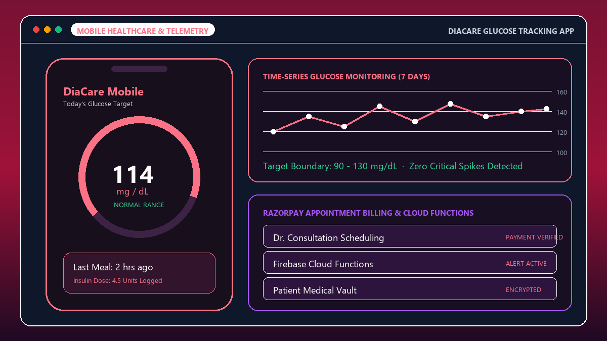
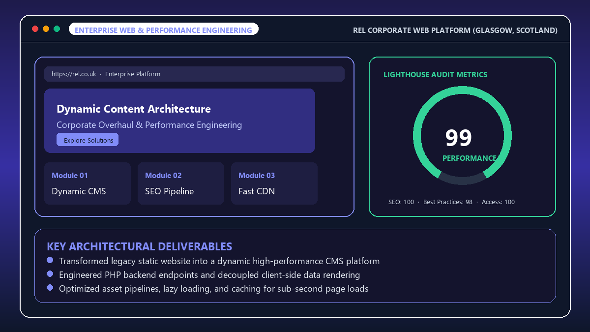
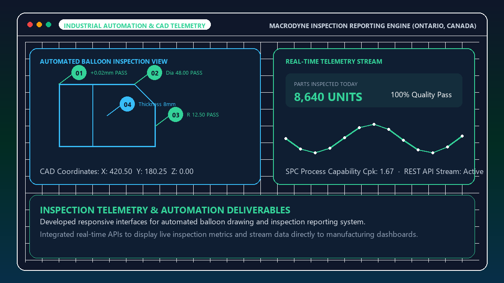
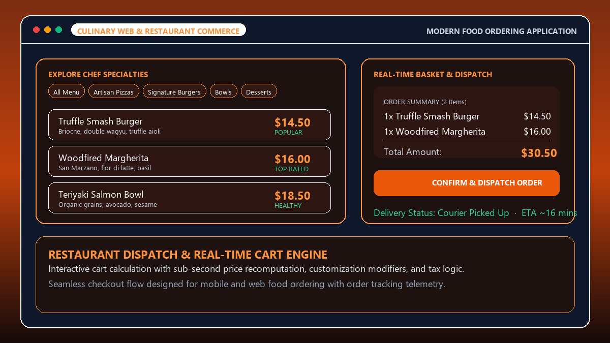
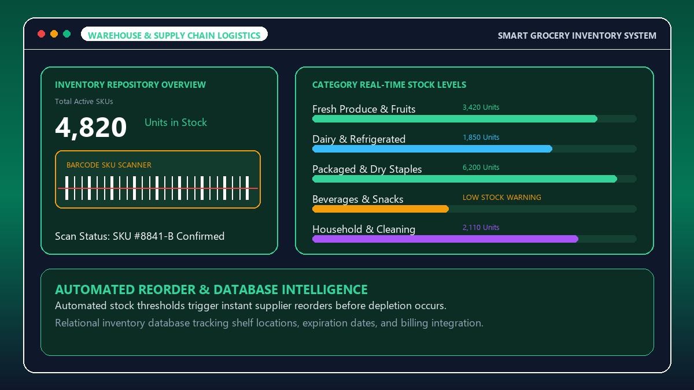
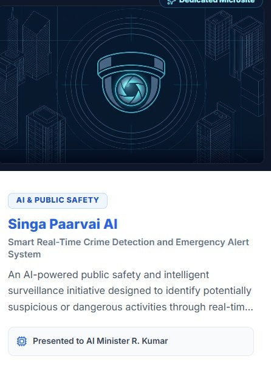
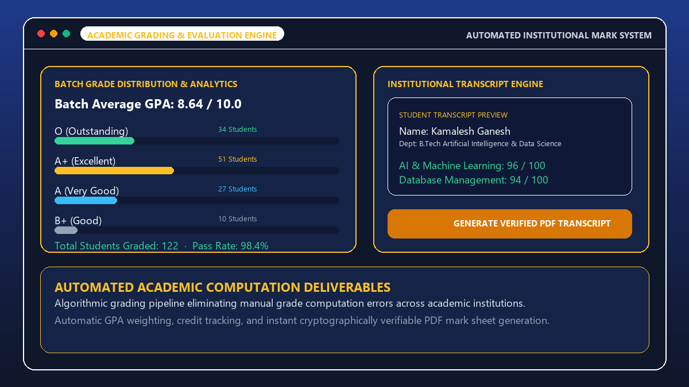

All 14 Engineering Projects
& Technical Inventions
A comprehensive directory spanning healthcare AI architectures, registered Intellectual Property, telematics platforms, full-stack web applications, and autonomous robotics.

MediLong — Hospital Platform
A hospital management platform designed to simplify healthcare administration through digital workflows, patient management, doctor management, appointments, medical records and intelligent healthcare features.

Singa Paarvai AI
An AI-powered public safety and intelligent surveillance initiative designed to identify potentially suspicious activities through real-time computer vision and emergency jurisdiction routing.

Panimalar Smart Transit
A campus transportation management system designed to coordinate bus routes, monitor pickup stops, and keep students informed on arrival times across institutional transit paths.

DiaCare+ Diabetes Management
Digital diabetes management application supporting fasting & post-prandial glucose logging, HbA1c progress tracking, and interactive glycemic variance curves.

PlotChoice Platform Modules
Interactive geospatial discovery, neighborhood boundary layers with MapLibre GL, and high-performance property directory with Prisma and PostgreSQL.
REL Website Enhancement
Worked on enhancing website functionality, interface and user experience, implementing responsive layout upgrades, and optimizing cross-browser performance standards.

Macrodyne Automation UI
Developed an intuitive user interface for automation-related workflows, enabling operators to control machine cycles, monitor state transitions, and review system telemetry.

AI Multi-Disease Diagnostic Engine
Interpretable multi-disease decision support engine combining biomarker panels, metabolic factors, and explainable feature attributions.

Autonomous Ground Vehicle (AGV)
Autonomous indoor mapping and payload navigation platform utilizing 2D LiDAR scanning, wheel encoders, and SLAM obstacle avoidance algorithms.

Automated Soil Testing Rig
Microcontroller-driven multi-sensor probe measuring NPK levels, moisture, electrical conductivity, and pH with automated telemetry logging.
Smart Hydroponics Monitor
Closed-loop nutrient dosing system with automated pH correction, water temperature management, and cloud monitoring telemetry.
Advanced Robotic Arm (4-DOF)
Inverse kinematics 4-axis robotic arm integrated with top-down computer vision camera for sorting and pick-and-place operations.

VITTRO — Intelligent Medical Assistant
Proprietary medical computer vision and assistive diagnostics invention registered for Intellectual Property protection.

MarkGen — Grade Analytics Engine
Automated grade evaluation and performance analytics engine enabling faculty to generate performance distributions and student transcripts.